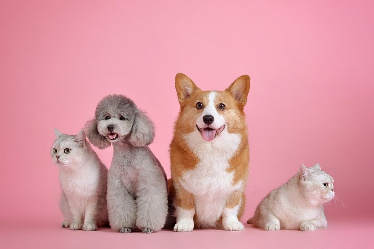

Seja bem-vindo ao cantinho dos bichinhos de estimação. Aqui você vai saber um pouco mais sobre o universo pet!
Para sua quinta colaboração de longa-metragens animados, a Illumination Entertainment e a Universal Pictures apresentam Pets - A Vida Secreta dos Bichos, uma comédia sobre a vida que nossos animais de estimação levam depois de sairmos para o trabalho ou escola todos os dias.